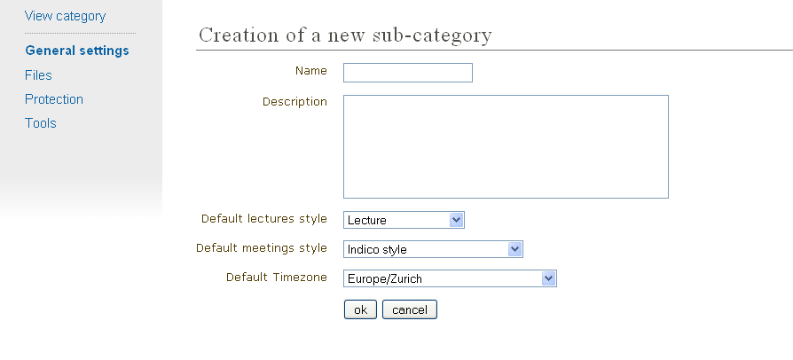
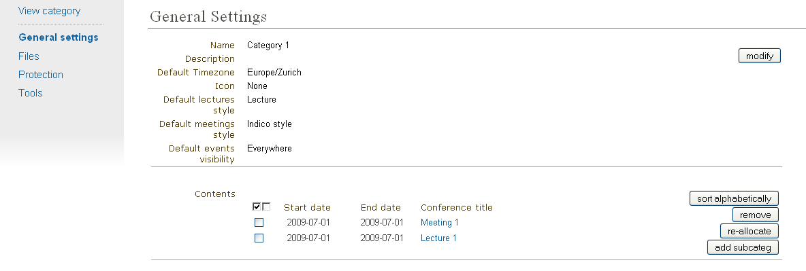
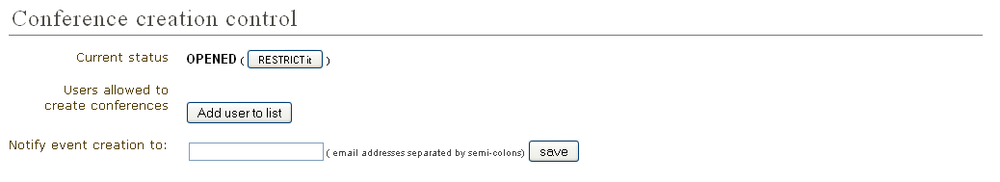

1. Categories¶
1.1. Category¶
A Category is a means of grouping your events or other Categories together. In Indico Home is the top level category from where you start. Inside a category you can:
- add events or other sub-categories,
- set access rights to say who can access or modify,
- re-allocate the sub-categories,
- remove the sub-categories,
- and also delete the current category and everything inside it.
These features are accessible through the menu Manage (you must be logged in and with modification rights in order to see it), that you can find close to the big orange category name. After clicking Manage (more specifically its inner option Edit category) you will be accessing the Management area for Category.
1.2. Creating a Category¶
From the menu Manage (more specifically its inner option Add subcategory) you can create a new category. You will need to have an Administrator’s account or be listed in the modification list (see Protection) for the category.
Also you can create it from the Management area, from the menu General settings (See General Settings) and by clicking the button add subcateg.

1.3. Category Management Area¶
1.3.1. General settings¶
In the Category Management Area, the first option in the menu is General settings:
You can modify the details of the category:
- Name
- Description
- Timezone
- Icon
- Default style (layout) for meetings created within this category (see Meetings)
- Default style (layout) for lectures created within this category (see Lectures)
and you can modify its content:
- Add a new sub-category
- Re-allocate (move to another category) some events or categories
- Remove the inner events or categories

1.3.2. Protection¶
From the Management Area you can protect your category using the three controls for access levels: Modification control, Access control, and Domain control. You can add Users or Groups to the Modification and Access control lists.

Modification Control Category Managers can be added to a category to allow access to the Management Area for modification. Category managers are either those listed in the modification control list, or Indico administrators. The creator of a category will be able to modify it without being listed.
Access Control A category can be public or private; Public: Anyone can view a public category and any user can add events to it. However, users will only be able to see the events inside the category to which they have access. Private: Only those users in the access list or administrators can access the category and add events. When a Category is made private, the option for domain control is omitted and any event or category made inside it will also be private. The category will be displayed with “(protected)” after its name to show it is private.
Domain Control The access to the Category can be restricted by domain. Therefore, just the users from the chosen domain will be able to access (e.g. If we choose the domain CERN, just users from inside CERN will be able to access the category and its content).
Conference Creation Tool You can restrict who is able to add events to the category. If you restrict it, you need to add users or groups to the list in order to allow them to add events.

See Protection System in order to know more about Protection in Indico.
1.3.3. Detail Modification & Sub-Category/Event Organisation¶
The details of a Category can be modified and sub-categories can be organised from the General settings tab in the management area. Details can be modified by clicking on modify inside the main tab. Sub-categories and events can be organised in the particular order in which you wish to view them by using the order drop down box next to each sub-category.

You can re-allocate a sub-category or event by selecting the one you wish to move using the tick box and clicking on re-allocate, you will then be asked to where you would like to reallocate this sub-category/event.
To remove a sub-category and anything it contains or an event, select it and click remove. If it contains anything you will be asked if you are sure you want to delete it.
1.3.4. Deleting a Category¶
To delete the current category you can go to the Tools menu in the Management Area and select ‘Delete this category’ you will be asked to confirm the deletion first.